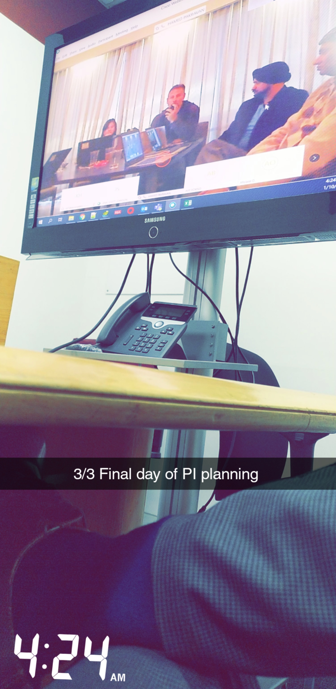

My Portfolio
I'll be eternally grateful to Webtrigon for my first internship, where I got my first taste of product management while interning for a company shortly after finishing my bachelor's degree, where I worked on SaaS software and websites, gathering requirements and designing wireframes. I witnessed the entire product development process, from research to planning to design to implementation and release.
I started out as a data analyst, assisting the product management team in making decisions as part of product development. I gradually learned business processes and was promoted to business analyst, where I optimized and upgraded the most complex process workflows in the application to make it financially compliant with regulatory boards, saving them nearly $400k USD per year. Within a year, I was promoted to product owner and was one of the youngest in Accenture India, where I, along with three other Product Owners, migrated the entire application from packaged software to a standalone one that we built from the ground up in an agile environment. was in charge of everything from ideation to design, implementation, and post-release support.The next on the product roadmap was to make applications intelligent by incorporating AI; unfortunately, we lacked the necessary product talent to carry this out.
After recognizing the gap, I assumed that masters would provide me with an advantage, and I envision myself installing AI features on applications. I was given the opportunity to intern with an adtech company as a product development intern, where I worked with a team to brainstorm and develop new MVPs/prototypes for the company. I also worked with product analytics to develop strategies for increasing foot traffic to our product by optimizing search engine attributes of the website and product.
After that check point in my life, having gained experience in UX, content management , social media marketing and product management and I thought pursuing masters in data science would put in the top skill bracket , so that I can help companies in installing intelligent AI features onto their product.
SOCIAL MEDIA RESEARCH INTERN (WEBTRIGON TECHNOLOGIES PVT LTD) - MAY 2016 - OCT 2016
Before, I joined Accenture in 2016, I was working with start up where I was working as social media research intern. I got a chance to setup digital profile of clients. Digital portfolios included Social media, website and its maintenance. Responsibilities: - Talking to clients, to find out how they want their social media or web pages to be implemented. - Wireframe walk throughs. - Creating content and media, curated as per the SEO standards. - Optimizing content for better SEO rankings - Creating Social Media profiles and orchestrating the content as per clients’ campaign/business needs. - Apply social media strategies to gain followers and converting them into clients. I interned there for about 6 months. And later, started working in Accenture.
DATA ANALYST (ACCENTURE) - NOV 2016 - DEC 2016
Responsibilities: - Analyzing the workflow and tracking data flow population. - Communicating with clients and presenting data inconsistencies by visualizations using excel. - Data Handling & Data Cleanup - creating scripts and executing them. - Creating new tables with new and merged columns. - Handling Adhoc report requests. - Optimizing Payment processing. - Retracing steps for the releases. - Testing modules - by being a part of UAT testing team. - Creating Unix scripts to clean up the directory and archive them. - Building test suites, test scripts and test cases for the developed modules as part of sanity test. - Performing sanity tests with respect to data and while executing SQL and UNIX scripts.
BUSINESS ANALYST (ACCENTURE) - JAN 2017 - JAN 2018
Responsibilities:Vendor Project - Tracking data flow within the workflow. - Adding buttons and text buttons. - Creating packages and moving it to a different environment - Deploying the very first package.Contact Project - Researching the contact module interaction with other modules/entities. - Interacting with clients by creating wireframes and placement of fields. - Interacting with clients regarding the contact data cleanup activity.Lease Package Project - Assessing the lease package document and highlighting the sections that needed to be implemented - Interacting with clients regarding the functionalities of the new highlighted and its value add to the lease package flow - Creating MVPs and demonstrating the reports to the clients. SLR production tickets.Context : I was given a production issue of 8 tickets that were untouched for a couple of years, as it belonged to one of complicated modules called the SLR. This was one of challenging moments I have been through as I had to understand twisted logics and go though several workflows to find out placing and logic. - Understanding the tickets and the languages - Going through the whole workflow and process of SLR - Understanding how the SLR module interacts with other modules - Interacting with accounting team on how the output should be. - Narrowing down the issue and root cause. - Reinventing the whole logic while coming up with testing regimes and report exchanges. - Implementing the new logic and getting it deployed. - Supporting whenever there were production tickets related to modules around SLR or on SLR modules.Fit
PRODUCT OWNER (ACCENTURE) - JAN 2017 - JAN 2018
Responsibilities:MVP project - Creating data catalogue and dictionary for all the modules. Interacting with clients regarding the unknown modules and discussing which non-value added modules that need to be deleted. - Creating functional documents for all the modules. - Creating wireframes and designing screens with help of UX designer. - Contributing to 2 automations and 2 innovative upgrades for existing application. - Presenting MVPs to stakeholders and acquiring a 7 million dollar project. - Creating Wireframes for Lease search and accounting module.Responsibilities: EXPERIENCE AS A PRODUCT OWNER - Written almost 100+ User Stories - Managed 2 teams - Implemented 4 innovative bulk features - Bulk PG approval, Bulk PG creation Bulk Lease approval, Bulk Lease Package creation. - Came up with new engine to monitor the SLR variables as part of preemptive reporting. - Was part of refactoring team, where I had to UAT all the refactored code and consolidate all the code related metrics to monitor the code quality. - Groomed features with clients o Analyzed particular features from the application stand point o Understand the pain points and objectives to be achieved o Data Analysis from data standpoint o Create success metrics o Created user stories and reviewed them with the product team o Implemented the code, demonstrated the same in a weekly iteration. Any changes suggested if there were time consuming were pushed to backlogs o Gave regular status updates.Fit

PRODUCT DEVELOPMENT INTERN (BLIPBILLBOARD) - FEB 2022 - MAY 2022
Responsibilities: - Analyzing the workflow and tracking data flow population. - Communicating with clients and presenting data inconsistencies by visualizations using excel. - Data Handling & Data Cleanup - creating scripts and executing them. - Creating new tables with new and merged columns. - Handling Adhoc report requests. - Optimizing Payment processing. - Retracing steps for the releases. - Testing modules - by being a part of UAT testing team. - Creating Unix scripts to clean up the directory and archive them. - Building test suites, test scripts and test cases for the developed modules as part of sanity test. - Performing sanity tests with respect to data and while executing SQL and UNIX scripts.
- ©2022 . All rights reserved
- "Plant Trees Save Lives"